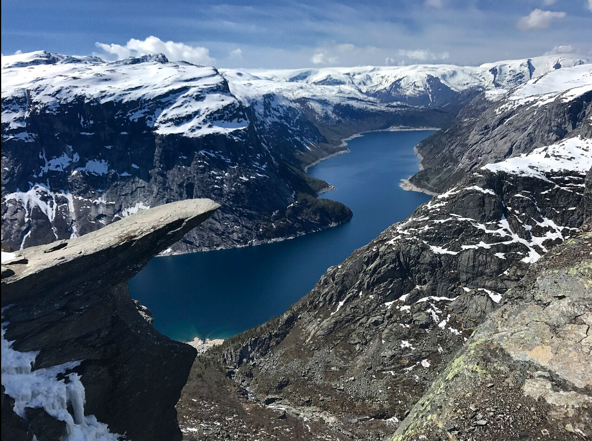
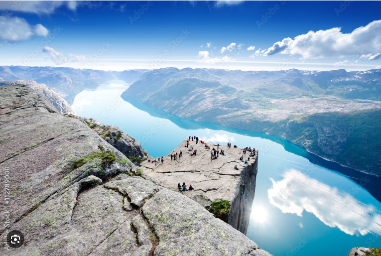
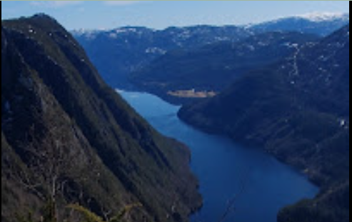

Trolltunga (literally “the Troll’s Tongue”) is a spectacular rock formation in Ullensvang Municipality, Vestland County, Norway. Perched 1,126 meters (3,694 ft) above sea level, the famous cliff extends horizontally from the mountainside and rises approximately 700 meters (2,300 ft) above the northern shore of Lake Ringedalsvatnet, offering one of the most breathtaking viewpoints in the country. In recent years, Trolltunga has become one of Norway’s most iconic natural landmarks and a world-renowned hiking destination. Visitor numbers have grown dramatically, with the challenging 27-kilometer (17-mile) round-trip hike from the village of Skjeggedal attracting tens of thousands of hikers each year. The hike is considered very demanding, typically taking at least 10 hours to complete over rugged mountain terrain. There are no shops or supply points along the route, so hikers must bring everything they need. Two emergency shelters are available on the trail, and plans have been proposed to build a mountain lodge approximately halfway along the route, providing a place for hikers to rest.

Preikestolen became a tourist destination around 1900, when the Stavanger Tourist Association (STF) began promoting the plateau as an important attraction. It was also STF that gave it the name Preikestolen, the Nynorsk version of Prekestolen. STF built the Preikestolhytta cabin in 1949, which was later complemented by the Preikestolen Mountain Lodge in 2004. The access road to Preikestolhytta was completed in 1961. The site has seen rapidly increasing visitor numbers over the years. During the period from May to August 2008, 117,554 people visited Preikestolen. By 2018, more than 300,000 people made the hike. In June 2019 alone, there were 64,000 visitors. In 2022, by October, it was estimated that 330,000 people had visited, setting a new record. In 2020, the four-kilometer trail to Preikestolen was certified as a National Tourist Route.

Lårdalstigen is a spectacular and challenging 14 km hiking trail in the Telemark region of Norway. The trail follows a narrow mountain ridge, rising 700–800 meters above the historic Telemark Canal and Lake Bandak, offering dramatic views throughout the hike.